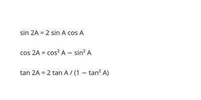

<script src="/assets/redirect.js"></script>
<section class="theory" data-section="P23-3.3">
<h2>3.3 Double angle formulae</h2>
<p class="src">Based on Cambridge International AS &amp; A Level Mathematics: Pure Mathematics 2 &amp; 3 Coursebook, Chapter 3, printed pp.61-65 (double angle formulae). Printed pages were read from P23.pdf (printed 61-65 = PDF 73-77). Own wording and new numbers. Teaching covers Key point 3.4.</p>
<p class="key-words"><strong>Key words:</strong> <em>double angle formulae</em></p>
<p>The <strong>double angle formulae</strong> follow from the compound-angle expansions by writing \(2A\) as \(A+A\):</p>
<p>\[\sin 2A \equiv 2\sin A\cos A,\]
\[\cos 2A \equiv \cos^2 A-\sin^2 A \equiv 2\cos^2 A-1 \equiv 1-2\sin^2 A,\]
\[\tan 2A \equiv \dfrac{2\tan A}{1-\tan^2 A}.\]</p>
<figure>

<figcaption>The double-angle formulae are identities: they hold for every value of \(A\) for which the expressions are defined.</figcaption>
</figure>
<div class="worked-example"><h4>Worked example 1</h4>
<p class="src">Book: Key point 3.4, printed pp.61-65. New special-angle numbers.</p>
<p>Find the value of \(2\sin 45^\circ\cos 45^\circ\).</p>
<ol class="steps">
<li>\(2\sin 45^\circ\cos 45^\circ=\sin 90^\circ=1\). <span class="mark">A1</span></li>
</ol></div>
<div class="worked-example"><h4>Worked example 2</h4>
<p class="src">Book: Key point 3.4, printed pp.61-65. New special-angle numbers.</p>
<p>Find the value of \(2\cos^2 0^\circ-1\).</p>
<ol class="steps">
<li>\(2\cos^2 0^\circ-1=2\times 1-1=1\). <span class="mark">A1</span></li>
</ol></div>
<h3>Common mistakes</h3><ul>
<li>Writing \(\sin 2A\) as \(2\sin A\), or \(\cos 2A\) as \(2\cos A\).</li>
<li>Using \(1-2\cos^2 A\) in place of \(1-2\sin^2 A\).</li>
</ul>
<div class="quick-check" data-q="QC1">
<h4>Quick check 1</h4>
<p>Find the value of \(2\sin 45^\circ\cos 45^\circ\).</p>
<details><summary>Show answer</summary>
<ol class="steps">
<li>\(2\sin 45^\circ\cos 45^\circ=1\). <span class="mark">A1</span></li>
</ol>
<p class="final">\(1\)</p>
</details>
</div>
<div class="quick-check" data-q="QC2">
<h4>Quick check 2</h4>
<p>Find the value of \(2\cos^2 0^\circ\).</p>
<details><summary>Show answer</summary>
<ol class="steps">
<li>\(2\cos^2 0^\circ=2\). <span class="mark">A1</span></li>
</ol>
<p class="final">\(2\)</p>
</details>
</div>
<div class="quick-check" data-q="QC3">
<h4>Quick check 3</h4>
<p>Find the value of \(2\cos^2 45^\circ-1\).</p>
<details><summary>Show answer</summary>
<ol class="steps">
<li>\(2\cos^2 45^\circ-1=\cos 90^\circ=0\). <span class="mark">A1</span></li>
</ol>
<p class="final">\(0\)</p>
</details>
</div>
<h3>Past paper</h3>
<p class="src">9709/22/F/M/16 Question 8(i) only, 2 marks. Official QP and official MS. Part (ii) is omitted. The question number was checked against the official QP.</p>
<p>Show that \(\sin 2x\cot x\equiv 2\cos^2 x\). [2]</p>
<details><summary>Show official scheme</summary>
<ol class="steps">
<li>State \(2\sin x\cos x\cdot\dfrac{\cos x}{\sin x}\) (or a similar unsimplified form). Official MS: B1. <span class="mark">B1</span></li>
<li>Simplify to confirm \(2\cos^2 x\). Official MS: B1. <span class="mark">B1</span></li>
</ol></details>
</section>
